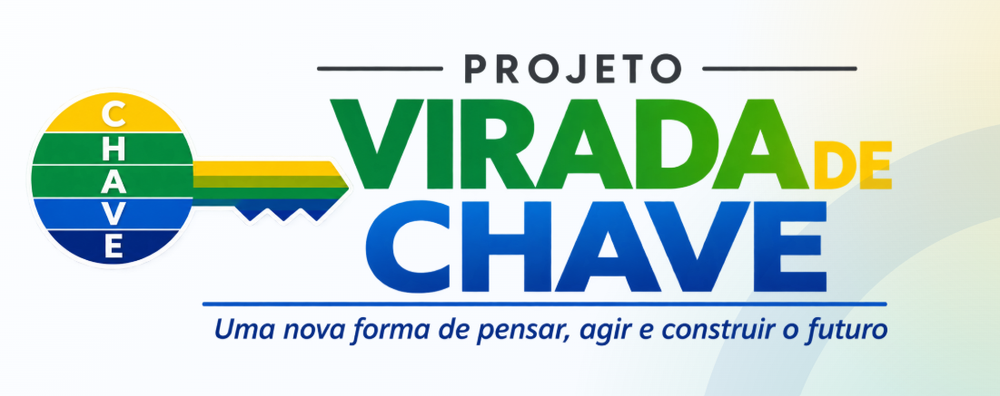
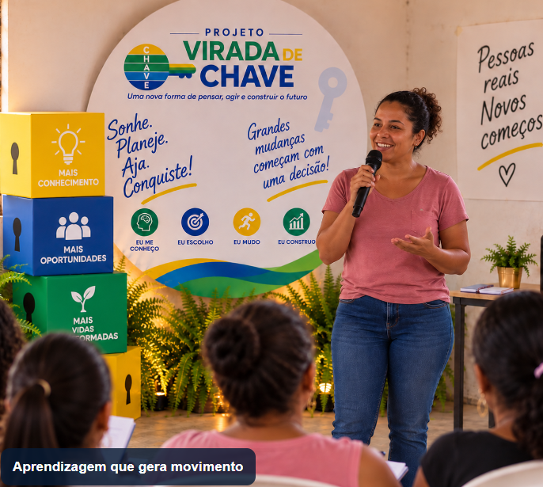
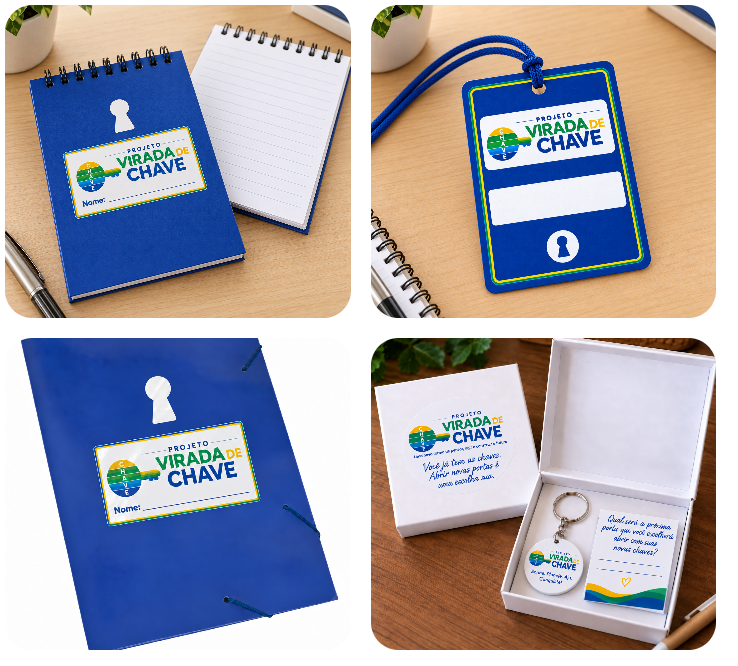
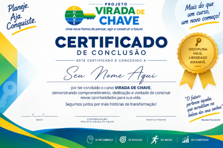

Transformando conhecimento em decisão. Decisão em ação. Ação em geração de renda.
Um percurso socioeducativo voltado à mudança de mentalidade, comportamento e atitude, preparando pessoas em situação de vulnerabilidade socioeconômica para reconhecer suas capacidades, aproveitar oportunidades e avançar em direção ao trabalho e à geração de renda.
Cursos, vagas e oportunidades podem chegar à comunidade. Mas isso não significa que serão aproveitados. Medo, desorganização, desistência, falta de iniciativa, crenças de incapacidade e dificuldade de manter compromissos podem impedir que uma oportunidade se transforme em ação.
Por isso, o Virada de Chave trabalha uma etapa que muitas vezes vem antes da qualificação profissional: mentalidade, hábitos e capacidade de transformar intenção em ação.
Não é apenas um curso. É uma experiência prática para despertar consciência, fortalecer responsabilidade, organização e iniciativa, reconhecer habilidades e possibilidades reais de trabalho e renda e estimular ações concretas.
Cinco princípios acompanham a experiência do participante e ajudam a tornar a mudança compreensível, prática e aplicável à vida real.
Reconhecer crenças, realidade e padrões.
Trocar pequenas atitudes que travam a mudança.
Sair da intenção e dar o próximo passo.
Definir onde quer chegar e o que quer construir.
Fazer, comprovar, ajustar e persistir.
O encerramento não é apenas uma formatura. É um momento de reconhecimento de avanços e de valorização das conquistas reais construídas ao longo da experiência.
As histórias e evidências de avanço podem inspirar novas pessoas da própria comunidade.
Identidade visual, materiais, ambiente de aprendizagem e celebração das conquistas ajudam a tornar a jornada concreta, acolhedora e memorável.



O projeto acompanha comportamento e execução, além da frequência: organização documental, planejamento, comparecimento a oportunidades aceitas e apresentação de conquistas tangíveis. Os indicadores são acompanhados a partir dos dados reais da execução.
Ajude o Instituto Edukhan a ampliar o Virada de Chave e levar essa experiência a mais pessoas e comunidades.